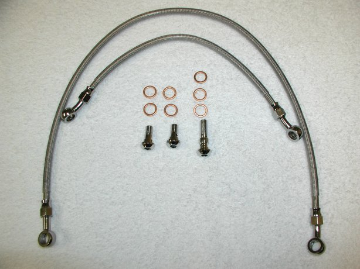
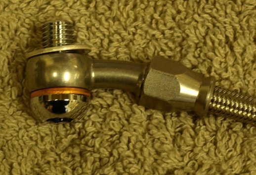
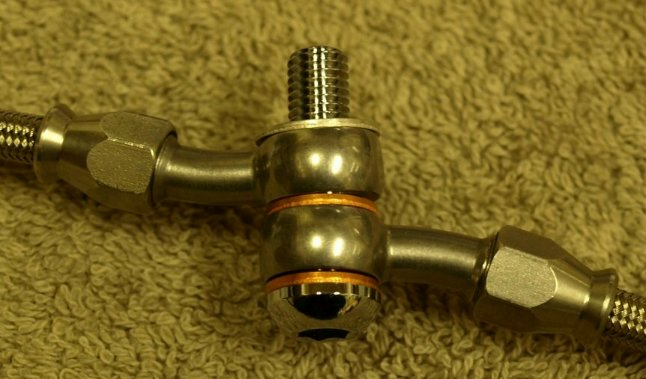
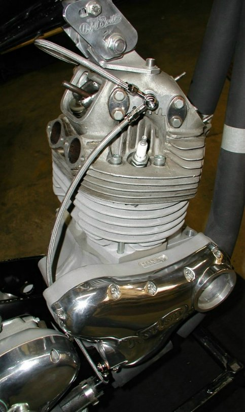
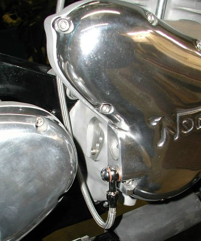
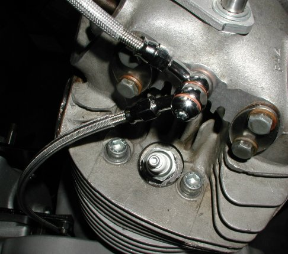
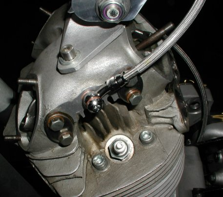

The current prices for our two stainless braided steel replacement rocker feed lines are:
Prices are current as of
02/12/21.

The other kit (06-5561/AS) is the same except it has stainless fittings.
The kits includes:
- One 25 1/2" line to run from the timing cover to the right side of the cylinder head.
- One 13" line to run from the right side of the cylinder head to the left side of the head.
- Two single domed banjo bolts. One for the timing cover and one for the left side of the cylinder head.
- One double domed banjo bolt for the right side of the cylinder head.
- seven sealing washers. Two each for the single banjos and three for the double banjo.
Please Note: We have found that the copper sealing washers do not seal against the head, timing cover or stand pipe (for our oil gauges), as the stock aluminum sealing washers. As of now we will be including four copper and three aluminum sealing washers with each kit. The following two pictures show how to install the sealing washers on the single and double banjos. The following pictures of the rocker feed lines on an engine will show a copper washer against the head and timing cover, but you will use the aluminum washers instead.


These rocker feed lines are designed to be installed as the following pictures show. The fittings are arranged on the lines so the banjos line up with the banjo bolt holes. The top line can only be installed one way, with the curved banjos, curving away from the engine. The line from the timing cover has the straight banjo facing down from the timing cover and looping towards the center of the bike and the curved banjo mounting on the right side of the cylinder head on the outside of the top line. The domed banjo bolts take a 7/32 allen wrench.




If you need to build a set of custom rocker feed line, see Rocker Feed Oil Line Fittings for information and pricing on all the parts that are available.
This page was written and designed by F. H. Eaton & Associates if you have any questions or comments please contact us at info@fheaton.com